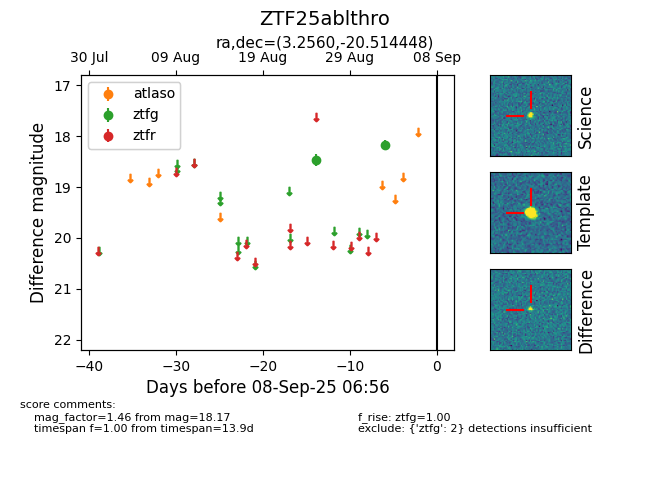

FINK: ZTF25ablthro
Lasair: ZTF25ablthro
ALeRCE: ZTF25ablthro
ZTF25ablthro (ztf,fink)
equatorial (ra, dec) = (3.2560,-20.51445)
galactic (l, b) = (67.8791,-79.01098)

last ztfg=18.17
2 ztfg detections